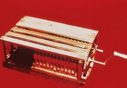

Charles, dritter Graf von Stanhope, konstruierte Rechenmaschinen, die multiplizieren und dividieren konnten, durch vielfache Subtraktionen und Additionen. Er war Poltiker und Mathematiker, erfand eine seinen Namen tragende eiserne Druckerpresse, verbesserte die Stereotypie und schrieb mehrere Abhandlungen über Mathematik und Mechanik.